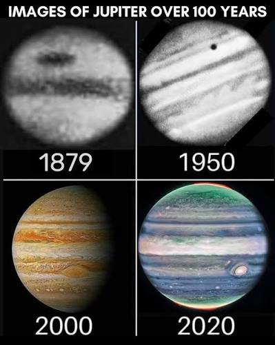
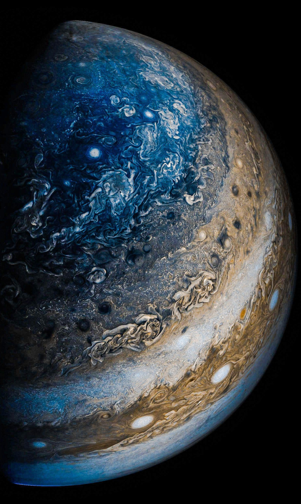

SOBRE JUPITER
Júpiter é o quinto planeta a partir do Sol e o maior do Sistema Solar, com uma massa 2,5 vezes maior que a de todos os outros planetas juntos. É um gigante gasoso composto essencialmente por hidrogênio e hélio, sem superfície sólida.
Sua Rotação (duração do dia) dura apenas 9,9 horas, da qual é considerado o o planeta com o dia mais curto do Sistema Solar.
Já a sua Translação (duração do ano) dura cerca de 12 anos terrestres, equivalente a 4.333 dias da Terra.
Dentre as características visíveis, podemos destacar as nuvens coloridas que pairam na superfície. Tal coloração é resultado da composição atmosférica (hidrogênio e hélio) e das intensas tempestades que ocorrem, com ventos de até 600 km/hora. A nuvem mais famosa foi apelidada de Mancha Vermelha, tão grande que é capaz de encobrir toda a Terra.
PRINCIPAIS LUAS
Além do quarteto principal, Júpiter possui dezenas de luas menores e irregulares. A maioria delas não tem formato esférico e possui apenas alguns quilômetros de diâmetro. Muitas dessas luas menores são asteroides ou fragmentos capturados pela enorme força gravitacional do planeta ao longo de bilhões de anos.
Com mais de 90 luas catalogadas, o sistema de Júpiter funciona quase como um "mini sistema solar", sendo alvo de missões espaciais de sondas que buscam entender os mistérios dessa região.
Júpiter tem 95 luas confirmadas, mas seu sistema é dominado pelas quatro Luas Galileanas: Io, Europa, Ganimedes e Calisto.

IO

GANIMEDES

CALLISTO

EUROPA
HISTÓRIA
Formado há quase 5 bilhões de anos, Júpiter agiu como um "irmão mais velho" no Sistema Solar, acumulando grandes quantidades de gás e poeira que sobraram da criação do Sol.Júpiter vem sendo explorado desde a década de 1970 por meio de sobrevoos e órbitas realizadas pelos programas Pioneer e Voyager da NASA, pela sonda Ulysses da ESA/NASA , pela missão Cassini-Huygens da NASA/ESA/ASI , pela sonda New Horizons da NASA e pelo orbitador Galileo da NASA (sendo o Galileo o único explorador dedicado a Júpiter e o único a orbitar o planeta antes da sonda Juno da NASA ).
Juno é a única missão atualmente em operação em Júpiter, tendo sido lançada em 2011 e entrado em órbita ao redor do planeta em 2016. O Jupiter Icy Moons Explorer (JUICE) da ESA chegará a Júpiter em 2031, logo após a chegada da sonda Europa Clipper da NASA em 2030, que tem como objetivo estudar a lua Europa de Júpiter.
MISSÕES
-
Sonda Juno (NASA):
Em órbita desde 2016, estuda profundamente a atmosfera, o campo magnético e a gravidade de Júpiter. A sonda opera em uma órbita polar próxima para evitar a forte radiação do planeta e também faz sobrevoos históricos em luas como Ganimedes, Europa e Io.
-
Sonda JUICE (ESA):
Lançada pela Agência Espacial Europeia, seu objetivo central são as luas geladas: Europa, Calisto e Ganimedes. Ela está a caminho do sistema jupiteriano para realizar dezenas de sobrevoos, investigando a habitabilidade e a existência de água no subsolo dessas luas.
-
Europa Clipper (NASA):
Lançada em direção a Júpiter, tem foco exclusivo na lua Europa. A missão analisa a crosta congelada e o oceano global do satélite, que possui fortes indícios de abrigar condições propícias para a vida


CURIOSIDADES
Maior planeta do Sistema Solar: Júpiter é tão grande que todos os outros planetas poderiam caber dentro dele, sendo mais de 300 vezes a massa da Terra.
Grande Mancha Vermelha: Uma gigantesca tempestade que existe há pelo menos 400 anos, com dimensões maiores que o nosso planeta, girando constantemente com ventos violentos.
Possui dezenas de luas: Atualmente, já se identificaram mais de 95 luas, incluindo quatro grandes: Io, Europa, Ganimedes e Calisto, conhecidas como as luas galileanas descobertas por Galileu em 1610.
Campo magnético poderoso: Júpiter possui o campo magnético mais forte do Sistema Solar, cerca de 20 mil vezes mais intenso que o da Terra, capaz de aprisionar partículas carregadas em cinturões de radiação intensos.
Atmosfera de hidrogênio e hélio: Sua atmosfera é composta principalmente por hidrogênio e hélio, com camadas de nuvens coloridas de amônia e água, criando faixas visíveis e padrões de tempestades dinâmicas.